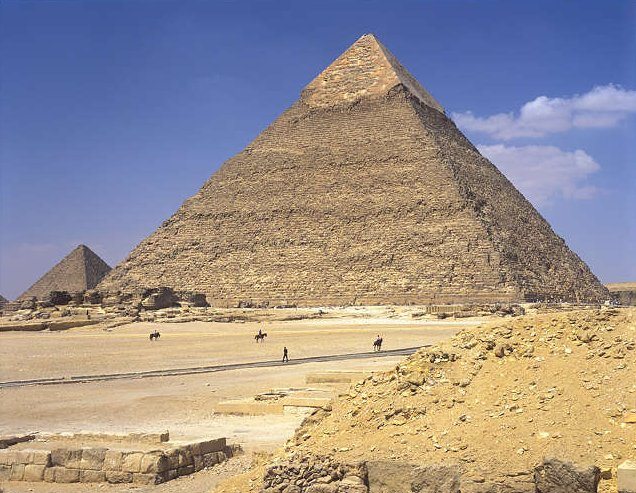
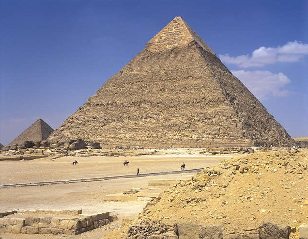
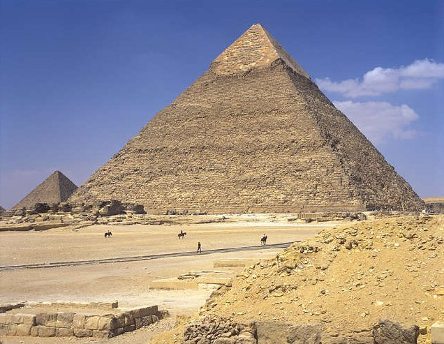

outros monumentos
- Quéfren
 A pirâmide de Quéfren é a segunda maior do Egito, ficando atrás apenas da pirâmide de gize

A pirâmide de Quéfren é a segunda maior do Egito, ficando atrás apenas da pirâmide de gize

-
Aluno: eliabe de moura sutil
Colégio Estadual Teotônio Villela
Primeiro Ano do Novo Ensino Médio

Localizada no egitoA piramide de giseDe todas as maravilhas da Antiguidade,localizada no Egito, é a única que pode ainda ser contemplada pelos turistas da atualidade. Sendo prova da veneração que os egípcios mantinham pelo faraó, esse monumento questiona muitos dos preconceitos que costumam ligar o Mundo Antigo às ideias de “simplicidade” e “incipiência”. Construído por volta de 2550 a.C., o suntuoso monumento de 137 metros de altura contou com o trabalho de 100 mil homens ao longo de 20 anos.
recomendações para turistas: O conhecimento sobre a estrutura interna da Grande Pirâmide ainda atordoa vários pesquisadores e egiptólogos fascinados pelo objeto. Até hoje, foram descobertas apenas três câmaras no interior da construção: a Câmara Real, que abrigava os restos do faraó; a Câmara Secreta; e a Câmara da Rainha. Para descobrir outros compartimentos na pirâmide, os cientistas teriam que ser obrigados a utilizar explosivos que poderiam comprometer a estrutura da mesma..
As pirâmides de Gizé, no Egito, correspondem ao chamando Complexo ou Necrópoles de Gizé. Estão em visitação até hoje, e uma delas faz parte das sete maravilhas do mundo
A pirâmide de Quéfren é a segunda maior do Egito, ficando atrás apenas da pirâmide de gize
